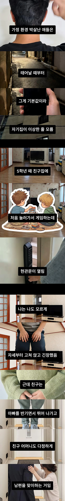
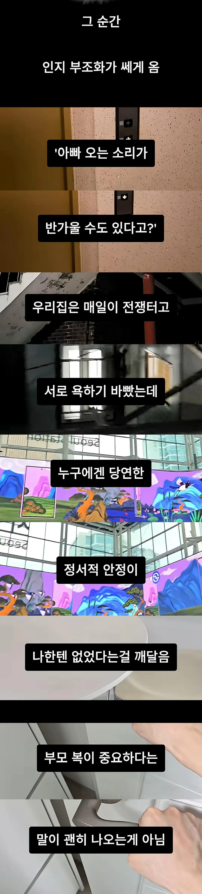
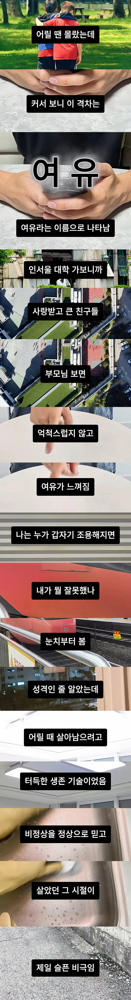
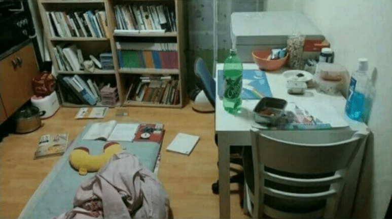
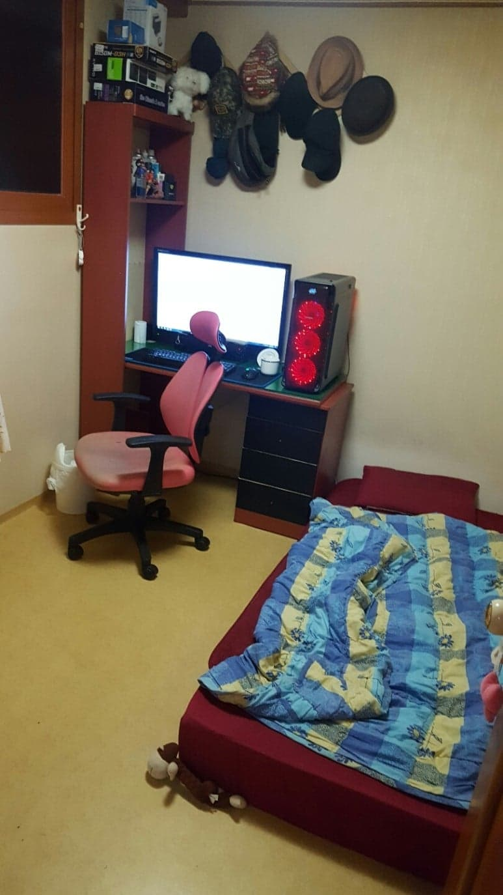
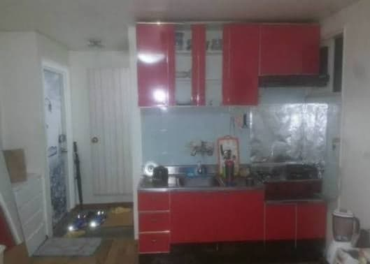
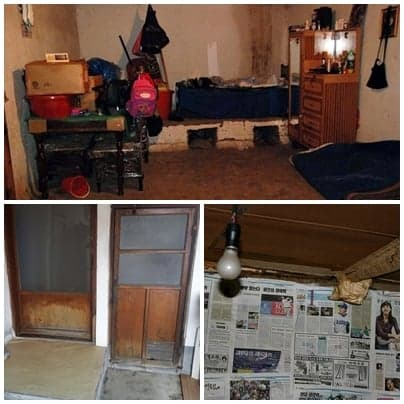
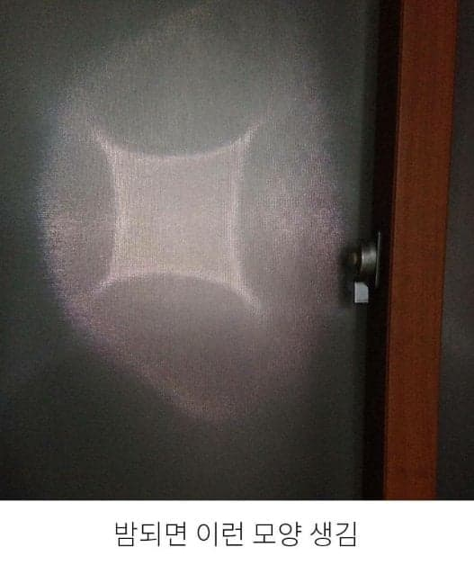
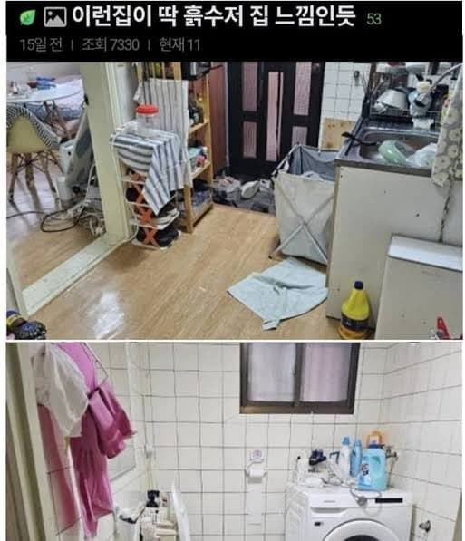
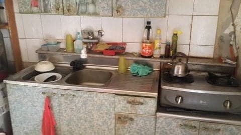
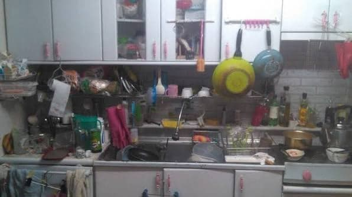
- dc official App











댓글
수집 당시 댓글 411개
ㅇㅇ · 11.27 12:12:48
ㅇㅇ · 11.27 12:18:35
ㅇㅇ · 11.27 12:20:57
ㅇㅇ(180.71) · 11.27 12:25:55
ㅇㅇ · 11.27 12:26:08
ㅇㅇ · 11.27 12:41:00
· ㅇㅇ · 11.27 12:42:04
· ㅇㅇ · 11.27 12:42:46
· ㅇㅇ · 11.27 16:32:08
ㅇㅇ · 11.27 12:45:28
ㅇㅇ · 11.27 12:47:05
ㅇㅇ · 11.27 12:47:53
· ㅇㅇ · 11.27 12:50:21
· ㅇㅇ · 11.27 17:49:59
· ㅇㅇ · 11.27 18:02:08
· ㅇㅇ · 11.27 18:04:47
· ㅇㅇ · 11.27 18:07:45
· ㅇㅇ · 11.27 18:34:27
· ㅇㅇ · 11.27 18:34:56
ㅇㅇ · 11.27 12:53:32
ㅇㅇ · 11.27 12:54:34
쿠다스 · 11.27 12:56:02
· ㅇㅇㅇㅇㅇㅇ · 11.27 13:05:23
· 쿠다스 · 11.27 13:16:12
· ㅇㅇ · 11.27 16:34:39
ㅇㅇ · 11.27 12:58:17
· ㅇㅇ · 11.27 16:50:49
ㅇㅇ · 11.27 12:59:08
ㅇㅇㅇㅇㅇㅇ · 11.27 13:03:55
· ㅇㅇ · 11.27 18:08:53
ㅇ.....ㅇ · 11.27 13:10:41
ㅇㅇ · 11.27 13:15:25
ㅇㅇ · 11.27 13:20:32
· ㅇㅇ · 11.27 13:39:42
· ㅇㅇ · 11.27 13:46:23
ㅇㅇ · 11.27 13:23:47
ㅇㅇ · 11.27 13:24:58
ㅇㅇ · 11.27 13:30:15
ㅇㅇ · 11.27 13:39:20
ㅇㅇ · 11.27 13:52:38
멋진남자 · 11.27 13:53:42
파래진다아아아 · 11.27 14:00:05
원또 · 11.27 14:41:22
ㅇㅇ · 11.27 14:49:02
ㅇㅇ · 11.27 14:56:51
· ㅇㅇ · 11.27 15:11:22
· ㅇㅇ · 11.27 16:10:02
· ㅇㅇ · 11.27 17:20:35
ㅇㅇ · 11.27 15:28:21
· ㅇㅇ · 11.27 15:32:15
· ㅇㅇ · 11.27 18:19:16
ㅇㅇ · 11.27 15:31:06
ㅇㅇ · 11.27 15:45:21
ㅇㅇ · 11.27 15:46:39
ㅇㅇ · 11.27 15:50:01
· ㅇㅇ · 11.27 15:51:40
ㅇㅇ · 11.27 15:52:18
· ㅇㅇ · 11.27 16:49:50
ㅇㅇ · 11.27 15:56:47
ㅇㅇ · 11.27 16:01:46
ㅇㅇ · 11.27 16:04:05
· ㅇㅇ · 11.27 16:04:22
ㅇㅇ · 11.27 16:06:55
너는ㅄ이맞습니다 · 11.27 16:26:03
· ㅇㅇ · 11.27 16:50:32
ㅇㅇ · 11.27 16:31:25
보이드 · 11.27 16:32:12
ㅇㅇ · 11.27 16:33:11
· ㅇㅇ · 11.27 17:06:11
· ㅇㅇ · 11.27 17:17:43
ㅇㅇ · 11.27 16:33:27
ㅇㅇ · 11.27 16:45:59
ㅇㅇ · 11.27 16:52:15
ㄱㄱ · 11.27 16:54:36
ㅇㅇ · 11.27 17:00:54
· ㅇㅇ · 11.27 17:01:02
ㅇㅇㅇ · 11.27 17:02:58
· ㅇㅇㅇ · 11.27 17:03:16
ㅇㅇ · 11.27 17:06:05
ㅇㅇ · 11.27 17:14:52
· ㅇㅇ · 11.27 18:11:53
ㅇㅇ · 11.27 17:26:46
ㅇㅇ · 11.27 17:28:57
ㅇㅇ · 11.27 17:34:42
ㅇㅇ · 11.27 17:49:26
ㅇㅇ · 11.27 18:11:48
· ㅇㅇ · 11.27 18:12:19
ㅇㅇ · 11.27 18:39:39
· ㅇㅇ · 11.27 18:39:46
ㅇㅇ · 11.27 19:32:28
ㅇㅇ · 11.27 19:41:23
ㅇㅇ · 11.27 19:41:55
ㅇㅇ · 11.27 19:48:47
ㅇㅇ · 11.27 19:51:27
· ㅇㅇ · 11.27 20:46:17
ㅇㅇㅇ · 11.27 19:59:38
· ㅇㅇㅇ · 11.27 20:05:27
ㅇㅇ · 11.27 20:07:37
· ㅇㅇ · 11.27 20:16:27
· ㅇㅇ · 11.27 20:36:28
· ㅇㅇ · 11.27 10:23:26
· ㅇㅇ · 11.27 10:24:26
· ㅇㅇ · 11.27 10:28:01
· ㅇㅇ · 11.27 10:28:49
· ㅇㅇ · 11.27 10:30:14
· ㅇㅇ · 11.27 12:50:12
디시에서관심조차받지못하던병신들이만든게
· ㅇㅇ · 11.27 12:50:43
바로일베이니라초개병신인아픈손가락이다노
· ㅇㅇ · 11.27 12:51:43
자식이개라서부모도개새끼냐고물어본다면엄
· ㅇㅇ · 11.27 12:51:57
맞음
ㅇㅇ · 11.27 10:21:54
· ㅇㅇ · 11.27 10:23:13
· ㅇㅇ · 11.27 10:23:51
· ㅇㅇ · 11.27 10:25:30
· ㅇㅇ · 11.27 10:27:08
· ㅇㅇ · 11.27 10:28:09
· ㅇㅇ · 11.27 10:33:25
· ㅇㅇ · 11.27 11:11:14
· ㅇㅇ · 11.27 12:48:18
ㅇㅇ · 11.27 10:27:48
ㅇㅇ · 11.27 10:28:36
· ㅇㅇ · 11.27 10:29:34
· ㅇㅇ · 11.27 10:30:22
· ㅇㅇ · 11.27 10:30:48
· ㅇㅇ · 11.27 10:32:11
· ㅇㅇ · 11.27 10:32:56
· ㅇㅇ · 11.27 10:33:21
· ㅇㅇ · 11.27 10:36:17
· ㅇㅇ · 11.27 10:37:47
· ㅇㅇ · 11.27 10:43:49
· ㅇㅇ · 11.27 11:14:25
· 쿠다스 · 11.27 12:58:49
· ㅇㅇ · 11.27 15:22:21
· ㅇㅇ · 11.27 15:23:24
· 1588 · 11.27 17:57:08
· 1588 · 11.27 17:59:37
ㅇㅇ · 11.27 10:30:22
· ㅇㅇ · 11.27 10:32:34
ㅇㄱㄹㅇ
· ㅇㅇ · 11.27 10:37:54
타이밍뒷통수한방 · 11.27 10:30:22
· ㅇㅇ · 11.27 10:32:11
· ㅇㅇ · 11.27 15:52:25
· ㅇㅇ · 11.27 16:01:16
ㅇㅇ · 11.27 10:35:36
ㅇㅇ · 11.27 10:37:44
ㅇㅇ · 11.27 10:43:18
ㅇㅇ · 11.27 10:43:39
ㅇㅇ · 11.27 10:44:21
· ㅇㅇ · 11.27 10:45:31
· ㅇㅇ · 11.27 10:46:53
· 1212 · 11.27 10:52:02
· ㅇㅇ · 11.27 12:45:21
· ㅇㅇ · 11.27 13:28:46
· ㅇㅇ · 11.27 16:35:08
ㅇㅇ · 11.27 10:44:57
ㅇㅇ · 11.27 10:47:43
ㅇㅇ · 11.27 10:50:37
ㅇㅇ · 11.27 10:51:03
· ㅇㅇ · 11.27 11:14:15
인천왕자 · 11.27 10:53:00
· 인천왕자 · 11.27 10:53:06
· ㅇㅇ · 11.27 16:25:54
ㅇㅇ · 11.27 11:01:03
ㅇㅇ · 11.27 11:01:25
ㅇㅅㅇ · 11.27 11:01:31
ㅇㅇ · 11.27 11:13:19
ㅇㅇ · 11.27 11:14:19
· ㅇㅇ · 11.27 11:14:30
· ㅇㅇ · 11.27 11:14:48
DC전사쿠루미쨩 · 11.27 11:14:34
내똥집엔크리넥스 · 11.27 11:22:46
ㅇㅇ · 11.27 11:26:22
ㅇㅇ · 11.27 11:26:52
· Machiavelli · 11.27 14:22:26
ㅇㅇ · 11.27 11:27:34
ㅇㅇ · 11.27 11:28:24
· ㅇㅇ · 11.27 16:35:34
· ㅇㅇ · 11.27 17:01:06
· ㅇㅇ · 11.27 17:14:19
ㅇㅇ · 11.27 11:34:03
ㅇㅇ · 11.27 11:44:07
ㅇㅇ · 11.27 11:45:30
· ㅇㅇ · 11.27 11:58:01
· 랄랄라 · 11.27 13:47:34
· ㅇㅇ · 11.27 14:54:14
· ㅇㅇ · 11.27 16:27:24
· ㅇㅇ · 11.27 16:27:40
징을_울려라 · 11.27 12:01:35
· ㅇㅇ · 11.27 12:21:48
ㅇㅇ · 11.27 12:05:59
· ㅇㅇ · 11.27 16:27:35
ㅇㅇ · 11.27 12:11:36
· ㅇㅇ · 11.27 12:21:23
· ㅇㅇ · 11.27 12:44:22
· ㅇㅇ · 11.27 12:46:28
· ㅇㅇ · 11.27 17:35:23
· ㅇㅇ · 11.27 17:41:40
· 인산카페인 · 11.27 18:42:23
· ㅇㅇ · 11.27 20:07:02
· ㅇㅇ · 11.27 20:23:59
ㅇㅇ · 11.27 12:12:19
· ㅇㅇ · 11.27 09:56:21
· ㅇㅇ · 11.27 09:56:56
· ㅇㅇ · 11.27 09:59:23
· ㅇㅇ · 11.27 10:33:35
· ㅇㅇ · 11.27 10:37:39
· ㅇㅇ · 11.27 11:00:35
· ㅇㅇ · 11.27 11:19:27
· ㅇㅇ · 11.27 11:20:08
· ㅇㅇ · 11.27 11:22:42
ㅇㅇ · 11.27 09:55:49
Cyclic · 11.27 09:55:53
ㅇ · 11.27 09:55:55
ㅇㅇ · 11.27 09:56:31
ㅇㅇ · 11.27 09:56:53
ㅇㅇ · 11.27 09:57:18
· ㅇㅇ · 11.27 09:57:59
4050범죄율 1위
ㅇㅇ · 11.27 09:58:14
ㅇㅇ · 11.27 09:58:38
ㅇㅇ · 11.27 09:58:51
ㅇㅇ · 11.27 09:59:48
· 안토니오 · 11.27 10:34:01
ㅇㅇ · 11.27 09:59:50
ㅇㅇ · 11.27 10:00:19
12345 · 11.27 10:01:22
· ㅇㅇ · 11.27 10:04:12
ㅇㅇ · 11.27 10:01:38
1212 · 11.27 10:01:52
ㅇㅇ · 11.27 10:03:16
· ㅇㅇ · 11.27 10:11:27
· ㅇㅇ · 11.27 10:11:53
· ㅇㅇ · 11.27 10:13:06
ㅇㅇ · 11.27 10:04:20
ㅇㅇ · 11.27 10:06:33
· ㅇㅇ · 11.27 10:13:44
ㅇㅇ · 11.27 10:07:13
· ㅇㅇ · 11.27 10:12:34
ㅇㅇ · 11.27 10:07:34
· ㅇㅇ · 11.27 10:09:07
· ㅇㅇ · 11.27 10:09:20
· ㅇㅇ · 11.27 10:12:55
· ㅇㅇ · 11.27 10:24:07
· ㅇㅇ · 11.27 10:24:33
ㅇㅇ · 11.27 10:09:32
· ㅇㅇ · 11.27 10:11:35
ㅇㅇㅇ · 11.27 10:09:48
· ㅇㅇ · 11.27 10:11:22
· ㅇㅇ · 11.27 10:11:42
· ㅇㅇ · 11.27 10:11:49
· ㅇㅇ · 11.27 10:14:18
ㅇㅇ · 11.27 10:11:33
· ㅇㅇ · 11.27 10:12:17
· ㅇㅇ · 11.27 10:13:13
· 랄랄라 · 11.27 14:08:14
ㅇㅇ · 11.27 10:12:00
· ㅇㅇ · 11.27 10:14:13
· ㅇㅇ · 11.27 10:28:21
ㅇㅇ · 11.27 10:12:04
· ㅇㅇ · 11.27 10:15:49
· ㅇㅇ · 11.27 10:16:55
ㅇㅇ · 11.27 10:12:39
· ㅇㅇ · 11.27 10:13:50
ㅇㅇ · 11.27 10:12:41
ㅇㅇ · 11.27 10:13:29
· ㅇㅇ · 11.27 10:15:45
· 1212 · 11.27 10:16:12
· ㅇㅇ · 11.27 10:17:34
· 1212 · 11.27 10:24:43
· ㅇㅇ · 11.27 10:25:23
· ㅇㅇ · 11.27 10:36:29
ㅇㅇ · 11.27 10:15:34
· ㅇㅇ · 11.27 10:16:51
· ㅇㅇ · 11.27 10:17:16
· ㅇㅇ · 11.27 10:18:13
· ㅇㅇ · 11.27 10:18:14
· ㅇㅇ · 11.27 10:18:35
· ㅇㅇ · 11.27 10:18:58
· ㅇㅇ · 11.27 10:19:26
· ㅇㅇ · 11.27 10:19:31
· ㅇㅇ · 11.27 10:20:43
· ㅇㅇ · 11.27 10:20:57
· ㅇㅇ · 11.27 10:21:33
· ㅇㅇ · 11.27 10:22:10
· ㅇㅇ · 11.27 10:22:46
· ㅇㅇ · 11.27 10:23:34
· ㅇㅇ · 11.27 10:25:13
· ㅇㅇ · 11.27 10:25:44
· ㅇㅇ · 11.27 10:26:34
· ㅇㅇ · 11.27 11:12:44
ㅇㅇ · 11.27 10:17:15
· ㅇㅇ · 11.27 10:18:35
ㅇㅇ · 11.27 10:18:31
· ㅇㅇ · 11.27 10:19:59
· ㅇㅇ · 11.27 12:51:45
ㅇㅇ · 11.27 10:18:43
ㅇㅇ · 11.27 10:19:03
· ㅇㅇ · 11.27 10:20:16
· ㅇㅇ · 11.27 10:21:14
· ㅇㅇ · 11.27 10:21:24
· ㅇㅇ · 11.27 10:21:43
· ㅇㅇ · 11.27 10:22:16
· ㅇㅇ · 11.27 09:53:45
楚覇王 項羽 · 11.27 09:36:55
· ㅇㅇ · 11.27 09:38:15
· 楚覇王 項羽 · 11.27 09:39:04
· ㅇㅇ · 11.27 09:51:10
· 楚覇王 項羽 · 11.27 09:57:34
ㅇㅇ · 11.27 09:36:56
· ㅇㅇ · 11.27 09:37:22
ㅇㅇ · 11.27 09:37:09
· ㅇㅇ · 11.27 09:46:51
삭제됨 · 11.27 09:38:02
· ㅇㅇ · 11.27 09:45:54
· ㅇㅇ · 11.27 09:46:50
헌트 · 11.27 09:38:36
ㅇㅇ · 11.27 09:39:18
아이스 · 11.27 09:40:11
ㅇㅇ · 11.27 09:40:19
ㅇㅇ · 11.27 09:40:42
ㅇㅇ · 11.27 09:40:47
· ㅇㅇ · 11.27 09:45:23
· ㅇㅇ · 11.27 10:07:02
ㅇㅇ · 11.27 09:40:48
ㅇㅇ · 11.27 09:41:17
ㅇㅇ · 11.27 09:41:23
· ㅇㅇ · 11.27 09:41:55
· ㅇㅇ · 11.27 09:42:33
· ㅇㅇ · 11.27 09:45:58
· ㅇㅇ · 11.27 10:07:50
ㅇㅇ · 11.27 09:41:38
· ㅇㅇ · 11.27 09:46:42
· ㅇㅇ · 11.27 09:47:11
· ㅇㅇ · 11.27 09:49:03
· ㅇㅇ · 11.27 09:51:24
· ㅇㅇ · 11.27 09:52:07
· ㅇㅇ · 11.27 09:52:38
· ㅇㅇ · 11.27 10:16:38
ㅇㅇ · 11.27 09:42:23
ㅇㅇ · 11.27 09:42:44
· ㅇㅇ · 11.27 09:45:30
ㅇㅇ · 11.27 09:42:55
ㅇㅇ · 11.27 09:43:20
· ㅇㅇ · 11.27 09:45:09
ㅇㅇ · 11.27 09:43:45
ㅇㅇ · 11.27 09:44:14
· ㅇㅇ · 11.27 09:44:50
ㅇㅇ · 11.27 09:45:28
· ㅇㅇ · 11.27 09:51:35
· ㅇㅇ · 11.27 09:53:00
· ㅇㅇ · 11.27 10:16:24
ㅇㅇ · 11.27 09:45:37
· ㅇㅇ · 11.27 09:46:04
· ㅇㅇ · 11.27 09:48:08
ㅇㅇ · 11.27 09:45:54
ㅇㅇ · 11.27 09:45:59
kawa · 11.27 09:46:24
ㅇㅇ · 11.27 09:46:46
· ㅇㅇ · 11.27 09:47:27
ㅇㅇ · 11.27 09:46:54
· ㅇㅇ · 11.27 09:47:11
석~열
· ㅇㅇ · 11.27 09:47:44
형보
수지
· ㅇㅇ · 11.27 09:48:07
· ㅇㅇ · 11.27 09:48:26
· ㅇㅇ · 11.27 09:50:28
· ㅇㅇ · 11.27 09:50:41
· ㅇㅇ · 11.27 09:53:07
· ㅇㅇ · 11.27 09:53:48
· ㅇㅇ · 11.27 09:54:08
· ㅇㅇ · 11.27 09:54:38
· ㅇㅇ · 11.27 09:56:49
· ㅇㅇ · 11.27 09:58:18
· ㅇㅇ · 11.27 09:59:48
· ㅇㅇ · 11.27 10:00:09
· ㅇㅇ · 11.27 10:02:00
· ㅇㅇ · 11.27 14:51:09
· ㅇㅇ · 11.27 19:54:40
· ㅇㅇ · 11.27 20:04:49
ㅇㅇ · 11.27 09:47:33
ㅇㅇ · 11.27 09:49:05
ㅇㅇ · 11.27 09:49:06
외성고
향격쳐
적을라
ㅇㅇ · 11.27 09:49:26
Ines3rd · 11.27 09:49:46
ㅇㅇ · 11.27 09:50:20
oo · 11.27 09:50:42
ㅇㅇ · 11.27 09:51:15
· ㅇㅇ · 11.27 09:54:05
삭제됨 · 11.27 09:51:38
· ㅇㅇ · 11.27 09:54:10
· ㅇㅇ · 11.27 10:10:26
· ㅇㅇ · 11.27 10:13:28
· ㅇㅇ · 11.27 10:15:58
· ㅇㅇ · 11.27 10:22:52
ㅇㅇ · 11.27 09:52:07
· ㅇㅇ · 11.27 09:58:01
· ㅇㅇ · 11.27 10:24:53
ㅇㅇ · 11.27 09:52:09
ㅇㅇ · 11.27 09:53:48
ㅇㅇ · 11.27 09:54:52
ㅇㅇ · 11.27 09:54:56
ㅇㅇ · 11.27 09:54:57
· ㅇㅇ · 11.27 09:55:33
ㅇㅇ · 11.26 20:22:00
아미야콘 · 11.27 09:36:46
봇치쟝 · 11.27 09:36:51
· ㅇㅇ · 11.27 09:39:15
· 봇치쟝 · 11.27 09:39:43
· ㅇㅇ · 11.27 09:41:11
· ㅇㅇ · 11.27 09:43:26
· ㅇㅇ · 11.27 09:43:48
· ㅇㅇ · 11.27 09:47:10
· 봇치쟝 · 11.27 09:47:37
· ㅇㅇ · 11.27 09:48:55